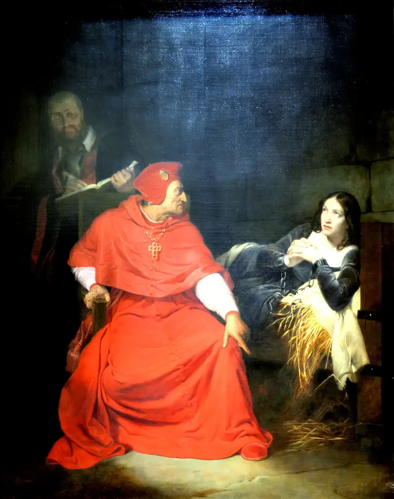

DOMINGO DA TRINDADE, 27 DE MAIO DE 1431
Três dias depois de abjurar e vestir a roupa de mulher que os juízes lhe ofereceram, Joana acordou acorrentada à cama, com cinco soldados ingleses de guarda, três dentro do quarto. Pediu que a soltassem para se levantar. Um deles lhe tirou a roupa de mulher, esvaziou o saco onde estava guardado o traje de homem e o jogou em cima dela: “Levanta-te”.
Ela recusou, porque sabia que aquilo lhe era proibido, e a discussão durou até o meio-dia, quando já não podia mais esperar. No dia seguinte, os juízes a declararam relapsa. Na quarta-feira, ela foi para a fogueira.
O livro mostra de onde vem cada detalhe, porque a tradução inglesa que se usa até hoje omite o motivo, e o que as testemunhas contaram sobre algo mais grave do que um vestido escondido.
PARTE III · O PROCESSO DE ROUEN